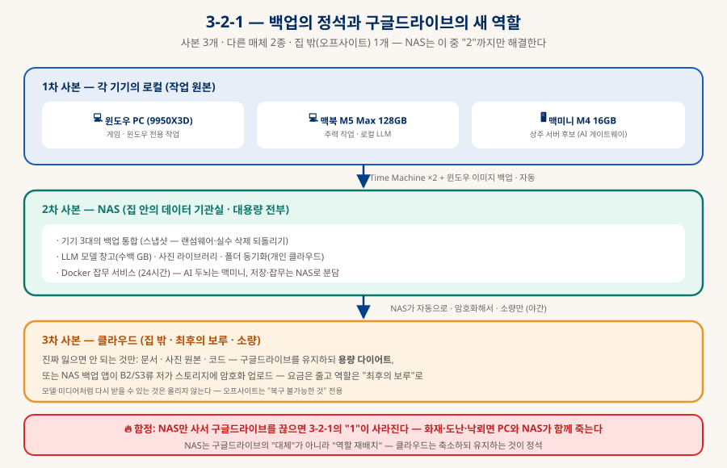
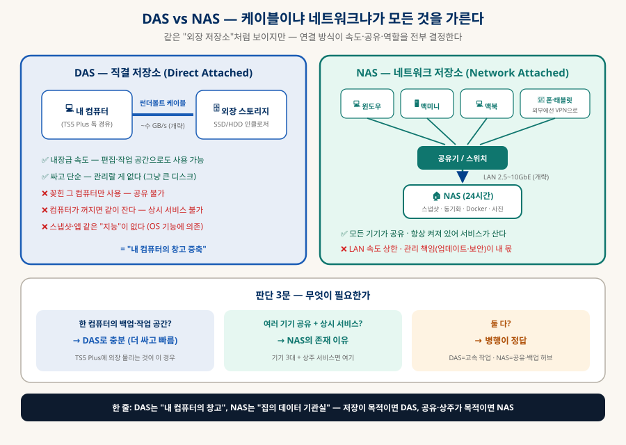
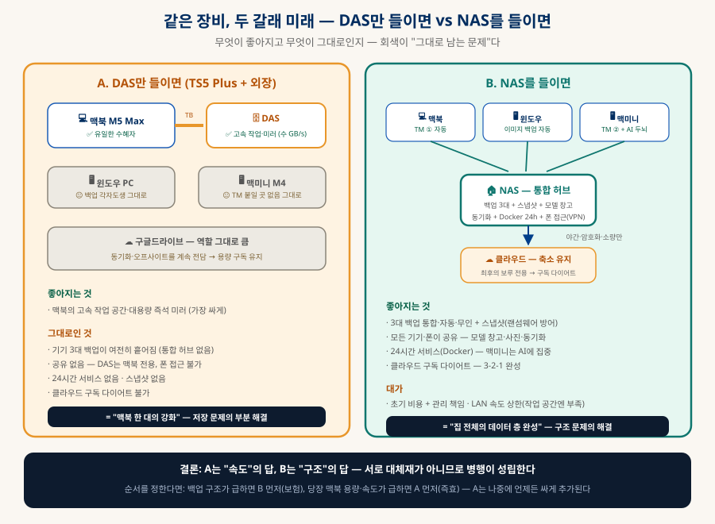
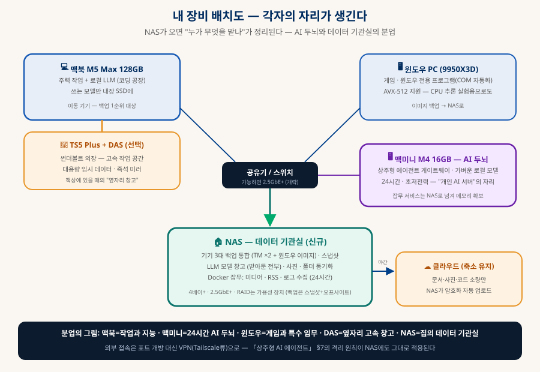

NAS와 개인 데이터 전략
구글드라이브를 버리는 게 아니라, 역할을 재배치하는 것
"구글드라이브 대신 NAS로 갈아탈까?"라는 질문에서 출발한다. 결론은 갈아타기가 아니라 재배치다 — NAS는 집의 데이터 기관실이 되고, 클라우드는 최후의 보루로 축소 유지된다. NAS의 기능 지도, 3-2-1 백업의 함정, 그리고 헷갈리기 쉬운 DAS와의 정면 비교까지 — 기기 여러 대를 쓰는 사람의 데이터 설계도.
0. 한눈에 보기 — 결론 세 줄
이 문서 전체가 이 세 문장의 전개다
1️⃣ NAS는 대체가 아니라 재배치
NAS가 대용량 전부(백업·모델·사진·동기화)를 맡고, 구글드라이브는 "잃으면 안 되는 소량"의 오프사이트로 축소 유지 — 요금은 줄고 안전은 늘어난다(§3).
2️⃣ DAS와 NAS는 다른 물건
DAS는 "내 컴퓨터의 창고 증축"(빠르고 싸다), NAS는 "집의 데이터 기관실"(공유·상시 서비스). 목적이 저장이면 DAS, 공유·상주면 NAS — 둘 다면 병행(§4).
3️⃣ RAID·NAS는 백업이 아니다
RAID는 가용성 장치(디스크 고장에도 안 멈춤)고, NAS는 집 안에 있다. 진짜 백업은 스냅샷(시점 복원) + 오프사이트(집 밖 사본) — 3-2-1이 그 공식이다(§3).
1. NAS로 할 수 있는 것 — 기능 지도
"네트워크에 붙은 큰 디스크"가 아니라 "집에 두는 작은 서버"다
각 기능을 NAS · 구글드라이브 · DAS 셋이 각각 할 수 있는지로 비교한다 — ✅ 제대로 됨 · 🔶 부분적·제약 있음 · ❌ 불가:
| 갈래 | NAS | 구글드라이브 | DAS |
|---|---|---|---|
| 여러 기기 백업 통합 | ✅ TM ×2 + 윈도우 이미지를 한 곳에, 무인 자동 | 🔶 파일 동기화뿐 — TM·시스템 이미지는 불가, 대용량은 요금 폭발 | 🔶 꽂힌 한 대만 (TM은 되지만 그 기기 전용) |
| 버전 스냅샷 | ✅ 파일시스템 수준·불변 설정 가능·기간 무제한 | 🔶 파일별 버전 기록 — 기간·횟수 제한, 폴더 통째 복원 약함 | ❌ 자체 기능 없음 (OS 기능에 의존) |
| 어디서든 접근·폰 사진 백업 | ✅ VPN 경유로 — 설정은 내 몫 | ✅ 이게 본업 — 가장 쉽고 매끄러움 | ❌ 케이블 닿는 곳까지만 |
| 대용량 창고 (모델·미디어) | ✅ 수십 TB 소유 — 단가 최저 | 🔶 되지만 구독료가 용량에 비례해 폭발 | ✅ 가장 싸고 가장 빠름 — 단 한 기기 전용 |
| 24시간 서비스 (Docker·자동화) | ✅ 존재 이유 — 미디어·사진(Immich)·RSS·야간 작업 | ❌ 저장소일 뿐, 내 코드를 못 돌림 | ❌ 컴퓨터가 꺼지면 같이 잔다 |
| 여러 기기 공유 작업 공간 | ✅ 네트워크 드라이브 — 동시 접근 | 🔶 동기화 방식 — 지연·충돌 있음, 대용량 부적합 | ❌ 한 대 전용 |
| 고속 작업 공간 (편집·임시 대용량) | 🔶 LAN 상한 — 10GbE라야 근접 | ❌ 인터넷 속도 — 논외 | ✅ 내장급 (썬더볼트 수 GB/s) |
| 재해 내성 (오프사이트) | ❌ 집 안 — PC와 운명 공동체 (§3) | ✅ 집이 불타도 산다 — 유일한 강점이자 결정적 강점 | ❌ 집 안 + 보통 PC 옆 |
읽는 법: ❌가 서로 보완 관계다 — NAS의 ❌(오프사이트)를 구글드라이브가, 구글드라이브의 ❌(서비스·속도·단가)를 NAS가, NAS의 🔶(고속 작업)를 DAS가 메운다. 셋 중 하나가 만능이 아니라서 §3의 "역할 재배치"가 성립한다.
2. 구글드라이브 대비 손익
이득 넷, 손해 둘, 그리고 함정 하나
| 구글드라이브 (클라우드) | NAS (자가호스팅) | |
|---|---|---|
| 용량 단가 | 구독 — 2TB급 연 십수만 원 (개략) | 수십 TB를 소유 — 몇 년이면 구독료 역전 |
| 속도 | 인터넷 회선 상한 — 대용량은 하세월 | LAN 2.5~10GbE — 수백 GB 이동이 일상 가능 |
| 프라이버시 | 제공사 서버에 원본 | 데이터가 집을 안 떠남 — 로컬 LLM과 같은 축 |
| 제약 | 쿼터·파일 크기·약관 변경 리스크 | 없음 — 디스크만큼 |
| 관리 | 제공사가 전부 — 신경 쓸 게 없다 | 디스크 고장·업데이트·보안이 내 몫 |
| 초기 비용 | 0원 | 본체+디스크 수십~백만 원대 (개략) |
| 재해 내성 | 집이 불타도 산다 (오프사이트) | 집과 운명 공동체 — §3의 함정 |
요약하면 — 용량·속도·프라이버시·자유는 NAS가, 무관리·재해 내성은 클라우드가 이긴다. 마지막 줄(재해 내성)이 이 문서에서 가장 중요한 행이다. 그래서 다음 절이 필요하다.
3. 3-2-1 — 백업의 정석, 그리고 NAS의 함정
사본 3개 · 매체 2종 · 집 밖 1개 — NAS는 "2"까지만 해결한다
백업의 오래된 공식 3-2-1: 사본 3개, 서로 다른 매체 2종, 그중 1개는 집 밖(오프사이트). NAS를 사면서 가장 흔한 실수가 "이제 클라우드 끊어야지"인데 — 그 순간 "1"이 사라진다. 화재·도난·낙뢰 앞에서 PC와 NAS는 같은 집에 있는 운명 공동체다. 지금 구글드라이브가 해주고 있는 역할이 바로 그 오프사이트고, 따라서 정답은 끊기가 아니라 축소 유지다:

1차 · 기기 로컬
작업 원본. 여기서 지워지고 깨지는 걸 아래 두 층이 받는다.
2차 · NAS (대용량 전부)
기기 3대 백업 + 스냅샷 + 모델·사진·미디어. 일상의 복구는 99% 여기서 끝난다 — 빠르니까.
3차 · 클라우드 (소량)
문서·사진 원본·코드 등 "다시 만들 수 없는 것"만. NAS가 야간에 암호화 자동 업로드 — 구글드라이브 유지 또는 B2류 저가 스토리지.
4. DAS vs NAS — 정면 비교
같은 "외장 저장소"처럼 보이지만, 연결 방식이 모든 것을 가른다
DAS(Direct Attached Storage)는 케이블로 한 컴퓨터에 직결하는 외장 스토리지 — TS5 Plus 독에 썬더볼트 외장을 물리는 게 정확히 이것이다. NAS는 네트워크에 붙어 모든 기기가 공유하는 독립 서버다. 이 한 줄 차이에서 속도·공유·역할·비용이 전부 갈라진다:

| DAS (직결) | NAS (네트워크) | |
|---|---|---|
| 속도 | 썬더볼트 ~수 GB/s(개략) — 내장급. 영상 편집·작업 공간으로도 가능 | LAN 상한 — 2.5GbE ~300MB/s, 10GbE ~1GB/s급(개략). 작업 공간보단 창고·백업 |
| 공유 | 꽂힌 컴퓨터 전용 — 옮기려면 케이블을 뽑아야 | 모든 기기 동시 접근 + 폰·외부(VPN)까지 |
| 상시성 | 컴퓨터가 꺼지면 같이 잔다 | 24시간 독립 가동 — 예약 백업·야간 동기화·상주 서비스의 전제 |
| 지능 | 없음 — 그냥 디스크 (스냅샷·앱은 OS 몫) | 스냅샷·버전·사용자 권한·Docker 앱 — 작은 서버 |
| 비용 | 인클로저+디스크 — 더 싸다 | 본체(작은 컴퓨터 값)+디스크 — 더 비싸다 |
| 관리 | 사실상 0 | 업데이트·보안·디스크 교체 — 서버 운영의 축소판 |
| 전력·소음 | 쓸 때만 | 상시 — 저전력이지만 24시간×365일 (개략 수십 W) |
| 한 줄 정체 | "내 컴퓨터의 창고 증축" | "집의 데이터 기관실" |
5. 내 장비 배치도 — 각자의 자리
윈도우 PC · 맥미니 · 맥북 · TS5 Plus에 NAS가 합류하면
먼저 갈림길부터 — DAS만 들였을 때와 NAS를 들였을 때, 같은 장비들이 어떻게 다르게 묶이는지를 나란히 놓는다. 회색으로 남는 것이 "그대로인 문제"다:

B를 택했을 때의 상세 배치가 아래다:

| 장비 | 맡는 것 | NAS와의 관계 |
|---|---|---|
| 맥북 M5 Max 128GB | 주력 작업 + 로컬 LLM(코딩 공장) | Time Machine 대상 ① · 쓰는 모델만 내장에, 나머지는 NAS 창고에서 꺼내옴 |
| 맥미니 M4 16GB | AI 두뇌 — 상주형 에이전트 게이트웨이·가벼운 모델 | Time Machine 대상 ② · 잡무 Docker는 NAS로 넘겨 16GB 메모리를 AI에 집중 |
| 윈도우 PC (9950X3D) | 게임 · 윈도우 전용(COM 자동화) · AVX-512 CPU 추론 실험 | 이미지 백업 → NAS. 대용량 게임은 백업 제외(재다운로드 가능) |
| TS5 Plus (+DAS 선택) | 책상의 고속 허브 — 필요 시 썬더볼트 외장 추가 | NAS와 경쟁 아님 — 고속 작업 공간은 DAS, 공유·백업은 NAS로 분업 |
| NAS (신규) | 데이터 기관실 — 백업 통합·스냅샷·모델 창고·동기화·잡무 Docker | 야간에 소량만 암호화해 클라우드로 (3차 사본) |
6. 시작 가이드 — 무엇을 사고 어떻게 지키나
하드웨어 선택 기준과 운영 수칙 — 전부 개략 기준
| 선택지 | 기준 | 이유 |
|---|---|---|
| 베이 수 | 4베이 이상 | "2베이는 금방 후회"가 국룰 — 용량 증설과 RAID 여유. 남는 베이는 미래다 |
| 네트워크 | 2.5GbE 이상, 가능하면 10GbE | 1GbE(~110MB/s)는 수백 GB 모델·백업에서 병목. 공유기·스위치도 같이 맞춰야 효과 |
| 디스크 | NAS 전용 라인 (CMR 방식) | 24시간 가동 설계 + RAID 재구축 내성. 같은 모델을 한 번에 사되 가능하면 구매처를 나눠 동시 고장 확률 분산 |
| 캐시 | NVMe 캐시 슬롯 있으면 활용 | 작은 파일·동기화 체감 개선 (필수는 아님) |
| 브랜드 | 시놀로지(소프트웨어 완성도, 최근 디스크 호환 정책 논란) · UGREEN(가성비 신흥) · QNAP | 첫 NAS는 기성품이 무난. 자작(미니PC+TrueNAS)은 재미와 자유가 크지만 관리 난도도 큼 — 두 번째에 추천 |
| 전원 | UPS(무정전 전원) 소형이라도 | 쓰기 중 정전은 파일 시스템의 적 — NAS와 연동해 자동 안전 종료 |
7. 체크리스트
사기 전 셋, 산 뒤 셋
1️⃣ 목적 판별 (사기 전)
§4의 3문 — 공유·상시성이 필요 없다면 DAS가 정답일 수 있다. NAS는 "필요"가 아니라 "역할"로 산다.
2️⃣ 총비용 계산 (사기 전)
본체+디스크 4개+UPS+필요시 2.5GbE 스위치까지. 클라우드 구독 몇 년치와 비교해 납득되는지.
3️⃣ 클라우드 유지 결정 (사기 전)
3차 사본을 무엇으로 할지 먼저 정한다 — 구글드라이브 다이어트 or B2류. "NAS 사면 끊어야지"가 가장 위험한 계획.
4️⃣ 백업 우선 (산 뒤)
편의 기능보다 백업·스냅샷·3차 사본을 먼저 완성 — §6의 도입 순서.
5️⃣ 복구 리허설 (산 뒤)
백업은 "복구가 되는지 확인한 날"부터 백업이다 — 파일 하나를 실제로 스냅샷·클라우드에서 되살려볼 것.
6️⃣ 보안 4수칙 (산 뒤)
VPN·계정·불변 스냅샷·업데이트(§6). 인터넷에 노출된 NAS는 시간 문제다.
8. 함께 읽기
이 문서에서 갈라지는 길들
| 주제 | 문서 |
|---|---|
| "개인이 서버 운영자가 되는" 전환과 보안 원칙 | 「상주형 AI 에이전트」 §7~8 — VPN·최소 권한·감사 |
| 맥미니 AI 서버와의 분업 | 「상주형 AI 에이전트」 §8 (하드웨어) · 「로컬 LLM 코딩 공장」 |
| NAS에 보관할 모델들 | 「현실적으로 사용해볼만한 로컬 모델」 — 모델 창고의 내용물 |
| 스토리지 계층·오브젝트 스토리지 | 「데이터베이스 완전 정리」 — S3·스토리지 계층 개념 |
| 네트워크 기초 (LAN·VPN·포트) | 「네트워크 통신 정리」 |